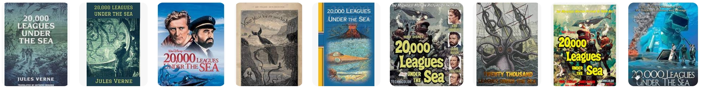

About the Project
Welcome to our interactive digital humanities project, "Mapping the Voyage: Science and Adventure in '20,000 Leagues Under the Sea'." This project aims to deepen our understanding of marine science and spark interest in oceanography through the lens of Jules Verne's classic novel.
Research Purpose & Question & Findings:
Research Purpose: To explore how "20,000 Leagues Under the Sea" can enhance our understanding of marine science and foster a love for ocean exploration.
Research Question: How does the novel depict the intersection of literature and science through its portrayal of oceanic exploration?
Findings & Process: Through a detailed literature review and content analysis, we examined the scientific descriptions of marine life, submarine technology, and oceanography within the novel. We utilized GIS tools to create an interactive map, which highlights significant exploration sites and events, enriched with scientific and literary insights.
Interactive Experience: Explore our GIS map to navigate through the chapters of the novel, discover summaries of key plot points, and learn about the marine animals encountered by Captain Nemo. The map also features educational content about the Nautilus and various oceanographic phenomena, blending Verne's literary imagination with scientific knowledge.
Research Process:
Literature Review: Summarized the novel with a focus on marine science and adventure. Reviewed literature on Jules Verne's impact on oceanography.
Content Analysis: Analyzed scientific descriptions in the novel, mapped key locations and routes using GIS tools.
Interactive Map Development: Created an interactive GIS map depicting the Nautilus's journey, annotated with scientific and literary insights.
Our project not only illustrates the scientific concepts presented in the novel but also demonstrates the power of literature in fostering scientific curiosity and education. Enjoy your journey through the depths of Verne's masterpiece!

Reference/Datasets
There are datatsets our group used to conduct this project as references:
Related Articles & Project Websites
20,000 Leagues Under The Sea. (n.d.). 20,000 Leagues Under The Sea. Retrieved May 27, 2024, from https://20thousandleaguesunderthesea.com/
Marpaung, R. F. (2017). The Description of Characters in The Novel Twenty Thousand Leagues Under The Sea by Jules Verne [Thesis]. https://repositori.usu.ac.id/handle/123456789/4268
McAllister, R. (2021). Twenty Thousand Leagues East: Around the World with Nadia: The Secret of Blue Water. Science Fiction Studies, 48(1), 46–61.
The Project Gutenberg eBook of Twenty Thousand Leagues under the Sea, by Jules Verne. (n.d.). Retrieved May 27, 2024, from https://www.gutenberg.org/files/164/164-h/164-h.htm#illus01
Verne, J. (1998). Twenty Thousand Leagues under the Seas. Oxford University Press.
Worth, A. (2020). The Squid and the Lentil: A-Hundred-and-Fifty Years under the Sea. Dickens Studies Annual, 51(2), 362–374. https://doi.org/10.5325/dickstudannu.51.2.0362
Collated Datasets
Main Plots with Times and Locations: view-link
Marine Life that Characters Encountered:view-link